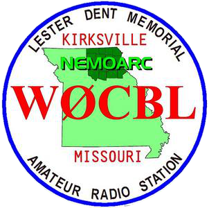
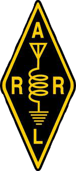

Adair County Flu Clinic October 4th 12-4pm
Nemo Triathlon September 10th
Welcome to the NEMOARC Web Page
We are an Amateur Radio club in
Northeast Missouri. We are in Adair county and have members from the
surrounding area. The station Call sign is W0CBL
We
operate a 2meter repeater on 145.130-
Our club
meets at 1:30pm on the second Sunday of every month
at
The Adair County Ambulance Training
Center 606 W Potter.
Recent Club Activities:
CLUB OFFICERS
President Don Bindner KD0PGM
Vice President Pam Barnett N0AYA
Secretary Dave Krueger AB0DK
Treasurer Paul Doi N0RWW
Coming UP
- No club meeting in December Club dinner December 10th 2pm at Coltons
- New! See KC0FGX's W0CBL Tour
- Now also available as a YouTube video
- Please Take our T-Shirt Survey!
- New meeting place
- Adair Co ambulance Training Center See picture on this page.
- Field Day
2018 June 23rd and 24th
- SSTV images from
balloon launch
Local/Regional Nets
- Nemoarc Net Tuesday Evening at 800pm on the repeater at 145.130.
- Nemo Ares Net Thursday night at 730pm.on the repeater at 145.130
- Nemo Saturday Morning Net Saturday at 9am.
- Missouri Traffic Net 3.930 Daily 545pm
- Missouri CW Traffic Net 3.585 Daily 745pm
- Missouri Emergency Services Net 3.963 Sunday after the Traffic Net
- Breakfast Club Net 3.973 4-8am central time
- Country cousins 3.9725 9pm central time.
- Also Check out W0OOW's selected central state nets page
Local Repeaters
Nemoarc W0CBL 145.130-
Macon ARC N0PR 146.805-
Chillicothe K0MPT 147.225+
Ready
to
learn Morse code?
Check out K7QO's
Morse lessons. Just 30 minutes a day to get proficient.